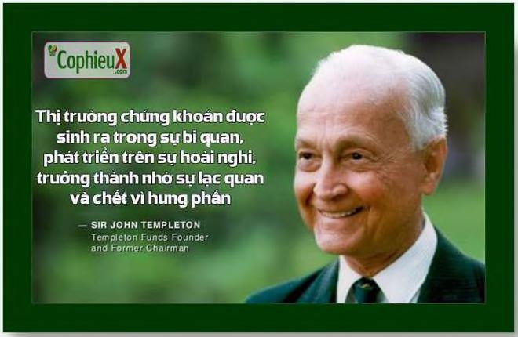

Nói chung là không. Tôi không còn là người ủng hộ các kỹ thuật phân tích chứng khoán phức tạp để tìm kiếm các cơ hội có giá trị vượt trội. Đây là một hoạt động bổ ích, ví dụ, cách đây 40 năm, khi cuốn sách giáo khoa cửa chúng tôi được xuất bản lần đầu tiên. Nhưng tình hình đã thay đổi rất nhiều kể từ đó. Điều thay đổi là: Sự cạnh tranh ngày càng tăng khi các cơ hội được biết đến nhiều; ông nghệ làm cho thông tín dễ tiếp cận hơn; và các ngành công nghiệp thay đổi khi nền kinh tế chuyển từ lĩnh vực công nghiệp sang lĩnh vực công nghệ, có chu kỳ kinh doanh và sử dụng vốn khác nhau. Mọi thứ đã thay đổi. Một điều kỳ lạ thú vị trong lịch sử đầu tư là bạn càng nhìn lại quá xa, bạn vàng có nhiều khả năng đang xem xét một thế giới không còn áp dụng cho ngày nay. Nhiều nhà đầu tư và nhà kinh tế cảm thấy thoải mái khi biết các dự báo của họ được hỗ trợ bởi dữ liệu hàng thập kỷ, thậm chí hàng thế kỷ. Nhưng kể từkhi các nền kinh tế phát triển, lịch sử gần đây thường là hướng dẫn tốt nhất cho tương lai, bởi vì nó có nhiều khả năng bao gồm các điều kiện quan trọng có liên quan đến tương lai. (Có một cụm từ phổ biến trong đầu tư, thường được sử dụng một cách chế giễu, “Lân này thì khác”. Nếu bạn cân phản bác lại ai đó dự đoán tương lai sẽ không phản ánh quá khứ một cách hoàn hảo, hãy nói, “ổ, vậy bạn nghĩ lần này đã khác?”. Nó xuất phát từ quan điểm của nhà đầu tư John Templeton “Bốn từ nguy hiểm nhất trong đầu tư là Tần này thì khác.” “CophieuX Thị trường chứng khoán được sinh ra trong sự bi quan, phát triển trên sự hoài nghĩ, trưởng thành nhờ sự lạc quan và chét vì hưng phần — SIR JOHN TEMPLETON hế giới thay đổi. Tất nhiên là thế. Và những thay đổi đó là điều quan trọng nhất theo thời gian. Michael Batnick đã nói: “Mười hai từ nguy hiểm nhất trong đầu tư là, “Bốn từ nguy hiểm nhất trong đầu tư: lần này thì khác.” iều đó không có nghĩa là chúng ta nên bỏ qua lịch sử khi nghĩ về tiến bạc. Nhưng có một sắc thái quan trọng: Bạn nhìn lại lịch sử càng xa, thì những điều ạn nên làm càng tổng quát hơn. Những điều chưng chung như mối quan hệ giữa con người với lòng tham và nỗi sợ hãi, cách họ cư xử khi bị căng thẳng và cách họ phản ứng với các khuyến khích có xu hướng ổn định theo thời gian. Lịch sử của tiền rất hữu ích cho loại công cụ đó. Nhưng các xu hướng cụ thể, các ngành nghề cụ thể, các lĩnh vực cụ thể, các mối quan hệ nhân quả cụ thể về thị trường và những gì mọi người nên làm với
